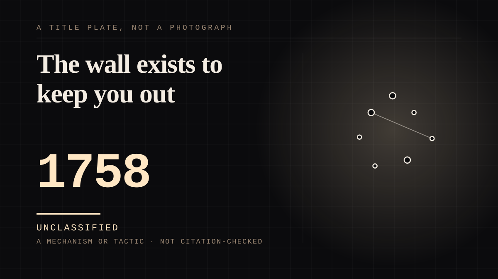

A mechanism or tactic · 1758 · Enlightenment
The wall exists to keep you out
Diderot invented the wall in 1758 for the purpose of stopping the audience noticing. Every breach since - a wink, a clap, a lecture - is that convention failing on purpose, and it is the only time the far side admits you are there.

The convention is an engineering specification for invisibility, and this entire site is about what happens on the far side of it. Diderot put it exactly where it belongs in 1758: actors and writers should "imagine a huge wall across the front of the stage, separating you from the audience, and behave exactly as if the curtain had never risen". The wall is not a description of the stage. It is a condition of it, and the condition is that you are not supposed to know. What happened to the phrase afterwards is the small, exact history of the idea. Diderot's un grand mur became the fourth wall to Leigh Hunt in 1807, writing about the actor Mr. Bannister: "No actor enters so well into the spirit of his audience as well as his author, for he engages your attention immediately by seeming to care nothing about you; the stage appears to be his own room, of which the audience compose the fourth wall." Henry Irving wrote in February 1879 that "the stage has four walls, though the fourth is only theoretical", and the first known use of fourth wall theory follows later that month in a comment on that article in the British periodical Truth. Vincent Canby called it "that invisible scrim that forever separates the audience from the stage" in 1987. Two hundred and forty years to get from a wall that keeps you out to a scrim that does the same job more honestly. Breaking it matters here because it is the only moment the figure admits that an audience exists - and the strongest version is not a wink. In Peter Pan the breach is an instruction the audience obeys: "If you believe in fairies, clap your hands!" said to revive Tinker Bell, who lives or dies according to whether strangers in the dark choose to believe. That is the parasocial condition with the volume turned up, because the fiction's survival is now a real person's decision rather than a fiction's. Bugs Bunny and the Warner Bros. characters broke it regularly, per the reference, in shorts like Daffy Duck and Egghead (1938) and Thugs with Dirty Mugs (1939) - which is the rabbit that talks to the audience, and he is documented, unlike anything called Harvey. Two honesty notes, and the second is the reason this is an entry and not a sub-category. First, in mockumentary the camera may be inside the fiction, so looking into it is not a breach at all - a convention only counts if the audience knows it is one. Second, and this is the boundary the whole site turns on: a fictional figure acknowledging that an audience exists is not a real person acknowledging you. Deadpool looks at the lens and cannot hear you. A streamer reads your comment aloud and the far side can hear you, which is what transparasocial means here. Same gesture, opposite structure, and a taxonomy that could not tell them apart would be a taxonomy that could not classify the thing it exists to classify.
Where it sits
1700 1700-1799 · 1758 1799
Provenance · 1 source record(s)
- retrievableThe definition and the whole etymology: 'Breaking the fourth wall in a narrative, particularly in drama, is the action of characters violating the convention of the fourth wall, for instance when performers in a play speak directly to or even interact with the audience, when movie or television characters speak directly into the camera, when protagonists in a novel acknowledge the artificiality of the story they are in, or generally whenever fictional characters openly refer to themselves as such.' The concept 'is often attributed to philosopher, critic and dramatist Denis Diderot, who wrote in 1758 that actors and writers should "imagine a huge wall across the front of the stage, separating you from the audience, and behave exactly as if the curtain had never risen"'. Diderot's 'un grand mur' 'became "the fourth wall" to Leigh Hunt when in 1807 referring to Mr. Bannister': 'No actor enters so well into the spirit of his audience as well as his author, for he engages your attention immediately by seeming to care nothing about you; the stage appears to be his own room, of which the audience compose the fourth wall.' Henry Irving, February 1879: 'It should never be forgotten that the stage has four walls, though the fourth is only theoretical.' 'The first known use of "fourth wall theory" follows later that month in a comment on that article in the British periodical Truth.' Vincent Canby 1987: 'that invisible scrim that forever separates the audience from the stage.' Also: 'Breaking the fourth wall is especially common in pantomime and children's theater where - for example, a character might ask the children for help, as when Peter Pan appeals to the audience to applaud in an effort to revive the fading Tinker Bell ("If you believe in fairies, clap your hands!")'. Cinema: Mary MacLane's 1918 Men Who Have Made Love to Me, 'the enigmatic author - who portrays herself - interrupts the vignettes onscreen to address the audience directly'; Reefer Madness (1936), Josef Forte as Dr. Alfred Carroll; Groucho Marx in Animal Crackers (1930) and Horse Feathers (1932), the latter advising viewers to 'go out to the lobby'; 'Characters in theatrical animated cartoons, particularly Bugs Bunny and other characters in Warner Bros.' Looney Tunes and Merrie Melodies shorts, regularly broke the fourth wall', with Tex Avery's Daffy Duck and Egghead (1938) and Thugs with Dirty Mugs (1939) named. Woody Allen on Annie Hall (1977): 'I felt many of the people in the audience had the same feelings and the same problems. I wanted to talk to them directly and confront them.' Jerry Lewis, The Total Filmmaker (1971): 'Some film-makers believe you should never have an actor look directly into the camera... I think that is nonsense, and usually I have my actors, in a single, look direct into the camera at least once in a film, if a point is to be served.' And the mockumentary exemption, which is the important one: 'because the camera crew and interview situation may be part of the fictional documentary frame, looking at or speaking to the camera does not always function as a convention.'Fourth wall. Wikipedia. ↗
Connected · 5 out, 7 in
Reported as a story
It sits in